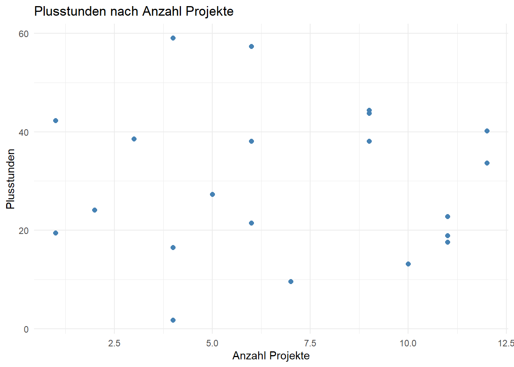
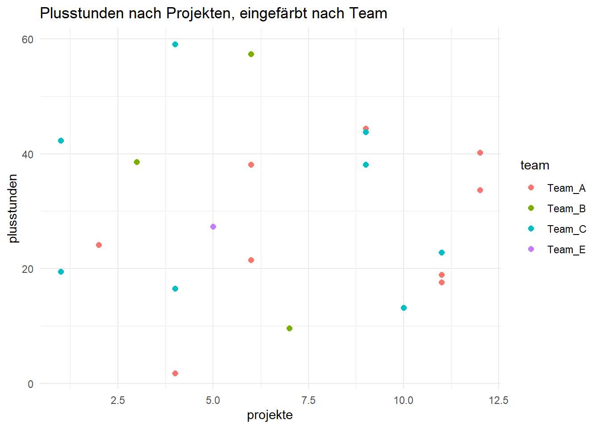
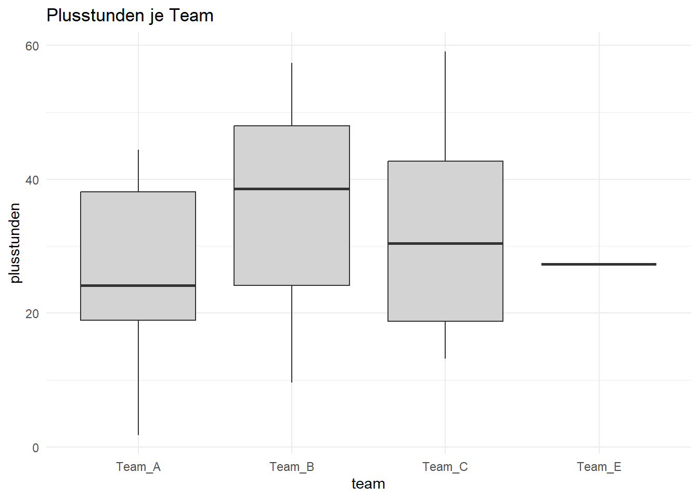

install.packages(c("dplyr", "ggplot2"))Einheit 3: Daten auswerten & visualisieren
In Einheit 2 hast du Daten eingelesen und aufgeräumt. Jetzt geht es darum, sie auszuwerten und darzustellen:
- Datenbearbeitung mit
dplyr— filtern, sortieren, umformen, gruppieren, verbinden - Visualisierung mit
ggplot2— Grafiken schichtweise aufbauen
Dafür werden zwei Pakete gebraucht. Falls noch nicht geschehen, einmalig in der Console installieren:
Wir arbeiten mit den Mitarbeitenden-Daten, die du in Einheit 2 schon eingelesen hast:
mitarbeitende <- read.csv("data/raw/mitarbeitende.csv")
teams <- read.csv("data/raw/teams.csv")
str(mitarbeitende)'data.frame': 22 obs. of 7 variables:
$ id : chr "M001" "M002" "M003" "M004" ...
$ name : chr "Anna" "Bertram" "Charlotte" "Dennis" ...
$ team : chr "Team_C" "Team_A" "Team_A" "Team_A" ...
$ land : chr "AT" "FR" "FR" "FR" ...
$ geschlecht : chr "w" "m" "w" "m" ...
$ plusstunden: num 16.5 44.4 1.8 33.7 13.2 9.6 57.4 21.5 43.8 17.6 ...
$ projekte : int 4 9 4 12 10 7 6 6 9 11 ...Bei Vera fehlen die Plusstunden (NA) — darauf kommen wir mehrmals zurück.
Teil 1: Datenbearbeitung mit dplyr
dplyr bündelt die typischen Arbeitsschritte in wenige, gut lesbare Funktionen („Verben”). Jedes Verb bekommt einen Data Frame und gibt einen neuen Data Frame zurück.
library(dplyr)filter() — Zeilen auswählen
filter(mitarbeitende, plusstunden > 40) id name team land geschlecht plusstunden projekte
1 M002 Bertram Team_A FR m 44.4 9
2 M007 Greta Team_B DE w 57.4 6
3 M009 Ines Team_C DE w 43.8 9
4 M011 Klara Team_C DE w 42.3 1
5 M012 Lukas Team_C AT m 59.1 4
6 M014 Noah Team_A DE m 40.2 12filter(mitarbeitende, land %in% c("AT", "DE"), projekte >= 10) # Komma = und id name team land geschlecht plusstunden projekte
1 M010 Jonas Team_A DE m 17.6 11
2 M014 Noah Team_A DE m 40.2 12
3 M016 Paul Team_C AT m 22.8 11Zeilen, bei denen die Bedingung NA ergibt (hier: Vera), fallen bei filter() weg.
select() — Spalten auswählen
select(mitarbeitende, name, team, projekte) name team projekte
1 Anna Team_C 4
2 Bertram Team_A 9
3 Charlotte Team_A 4
4 Dennis Team_A 12
5 Emily Team_C 10
6 Farid Team_B 7
7 Greta Team_B 6
8 Hannes Team_A 6
9 Ines Team_C 9
10 Jonas Team_A 11
11 Klara Team_C 1
12 Lukas Team_C 4
13 Mira Team_A 6
14 Noah Team_A 12
15 Olga Team_C 9
16 Paul Team_C 11
17 Quentin Team_C 1
18 Rosa Team_A 2
19 Simon Team_A 11
20 Tara Team_B 3
21 Uwe Team_E 5
22 Vera Team_B 4arrange() — sortieren
arrange() sortiert nach einer oder mehreren Spalten; desc() dreht die Reihenfolge um:
arrange(mitarbeitende, desc(plusstunden)) id name team land geschlecht plusstunden projekte
1 M012 Lukas Team_C AT m 59.1 4
2 M007 Greta Team_B DE w 57.4 6
3 M002 Bertram Team_A FR m 44.4 9
4 M009 Ines Team_C DE w 43.8 9
5 M011 Klara Team_C DE w 42.3 1
6 M014 Noah Team_A DE m 40.2 12
7 M020 Tara Team_B DE w 38.6 3
8 M013 Mira Team_A DE w 38.1 6
9 M015 Olga Team_C FR w 38.1 9
10 M004 Dennis Team_A FR m 33.7 12
11 M021 Uwe Team_E AT m 27.3 5
12 M018 Rosa Team_A AT w 24.1 2
13 M016 Paul Team_C AT m 22.8 11
14 M008 Hannes Team_A AT m 21.5 6
15 M017 Quentin Team_C FR m 19.5 1
16 M019 Simon Team_A FR m 18.9 11
17 M010 Jonas Team_A DE m 17.6 11
18 M001 Anna Team_C AT w 16.5 4
19 M005 Emily Team_C FR w 13.2 10
20 M006 Farid Team_B AT m 9.6 7
21 M003 Charlotte Team_A FR w 1.8 4
22 M022 Vera Team_B DE w NA 4Der Pipe-Operator: %>% und |>
Das Problem: mehrere Schritte hintereinander
Sollen mehrere Funktionen nacheinander angewendet werden, gibt es ohne Pipe zwei Wege — beide sind unhandlich:
# 1. Verschachteln: muss von innen nach außen gelesen werden
arrange(filter(mitarbeitende, land == "AT"), desc(plusstunden)) id name team land geschlecht plusstunden projekte
1 M012 Lukas Team_C AT m 59.1 4
2 M021 Uwe Team_E AT m 27.3 5
3 M018 Rosa Team_A AT w 24.1 2
4 M016 Paul Team_C AT m 22.8 11
5 M008 Hannes Team_A AT m 21.5 6
6 M001 Anna Team_C AT w 16.5 4
7 M006 Farid Team_B AT m 9.6 7# 2. Zwischenergebnisse speichern: lesbar, aber viele Hilfsvariablen
nur_at <- filter(mitarbeitende, land == "AT")
arrange(nur_at, desc(plusstunden)) id name team land geschlecht plusstunden projekte
1 M012 Lukas Team_C AT m 59.1 4
2 M021 Uwe Team_E AT m 27.3 5
3 M018 Rosa Team_A AT w 24.1 2
4 M016 Paul Team_C AT m 22.8 11
5 M008 Hannes Team_A AT m 21.5 6
6 M001 Anna Team_C AT w 16.5 4
7 M006 Farid Team_B AT m 9.6 7Die Lösung: die Pipe
Der Pipe-Operator nimmt das Ergebnis auf seiner linken Seite und setzt es als erstes Argument in die Funktion auf der rechten Seite ein:
x %>% f(y) ist dasselbe wie f(x, y)Damit wird aus der Verschachtelung eine Kette, die man von oben nach unten liest. Die Pipe spricht man am besten als „und dann”: Nimm mitarbeitende, und dann filtere nach Österreich, und dann sortiere nach Plusstunden.
mitarbeitende %>%
filter(land == "AT") %>%
arrange(desc(plusstunden)) id name team land geschlecht plusstunden projekte
1 M012 Lukas Team_C AT m 59.1 4
2 M021 Uwe Team_E AT m 27.3 5
3 M018 Rosa Team_A AT w 24.1 2
4 M016 Paul Team_C AT m 22.8 11
5 M008 Hannes Team_A AT m 21.5 6
6 M001 Anna Team_C AT w 16.5 4
7 M006 Farid Team_B AT m 9.6 7Beachte: In der Kette steht in filter() und arrange() kein Data Frame mehr — den liefert die Pipe von oben.
Zwei Schreibweisen: %>% und |>
In R gibt es zwei Pipes. Für alles, was in dieser Einführung vorkommt, verhalten sie sich gleich — dieselbe Kette mit der eingebauten Pipe |>:
mitarbeitende |>
filter(land == "AT") |>
arrange(desc(plusstunden)) id name team land geschlecht plusstunden projekte
1 M012 Lukas Team_C AT m 59.1 4
2 M021 Uwe Team_E AT m 27.3 5
3 M018 Rosa Team_A AT w 24.1 2
4 M016 Paul Team_C AT m 22.8 11
5 M008 Hannes Team_A AT m 21.5 6
6 M001 Anna Team_C AT w 16.5 4
7 M006 Farid Team_B AT m 9.6 7%>% |
\|> |
|
|---|---|---|
| Name | magrittr-Pipe | native Pipe (eingebaut) |
| Herkunft | Paket magrittr, wird von dplyr mitgeladen |
fester Bestandteil von R seit Version 4.1 (2021) |
| braucht ein Paket? | ja — ohne library(dplyr) gibt es einen Fehler |
nein |
| wo man sie sieht | ältere Tutorials, Stack Overflow, viele Kurse — auch in den weiteren Kursmaterialien | aktuelle R-Dokumentation, R for Data Science (2. Auflage), tidyverse-Stilempfehlung |
In diesem Kurs verwenden wir %>%, weil es in den weiteren Kursmaterialien verwendet wird. Die aktuelle Empfehlung für neuen Code ist |>. Du solltest beide lesen können — wenn du eine der beiden siehst, denk einfach „und dann”.
Zwei kleine Unterschiede
Für den Anfang selten wichtig, aber gut zu wissen, wenn Code aus dem Netz nicht funktioniert:
- Klammern: Bei
|>muss rechts immer ein Funktionsaufruf mit Klammern stehen.mitarbeitende %>% headfunktioniert,mitarbeitende |> headnicht — richtig istmitarbeitende |> head(). Einfachste Regel: immer Klammern schreiben. - Platzhalter: Soll das Ergebnis nicht an die erste Stelle, markiert man die Stelle mit einem Platzhalter — bei
%>%ein Punkt., bei|>ein Unterstrich_(nur mit Argumentnamen). Beispiel:lm()berechnet eine Regression und erwartet die Daten erst im Argumentdata:
mitarbeitende %>% lm(plusstunden ~ projekte, data = .)
Call:
lm(formula = plusstunden ~ projekte, data = .)
Coefficients:
(Intercept) projekte
30.7215 -0.1164 mitarbeitende |> lm(plusstunden ~ projekte, data = _)
Call:
lm(formula = plusstunden ~ projekte, data = mitarbeitende)
Coefficients:
(Intercept) projekte
30.7215 -0.1164 Tastenkürzel: Strg/Cmd + Shift + M fügt eine Pipe ein. Welche, stellt man unter Tools → Global Options → Code → „Use native pipe operator, |>“ ein — für diesen Kurs den Haken nicht setzen, dann kommt %>%.
mutate() — neue Spalten berechnen
mutate() berechnet eine neue Spalte aus bestehenden — elementweise für jede Zeile. Gleichwertig in Basis-R wäre mitarbeitende$stunden_pro_projekt <- mitarbeitende$plusstunden / mitarbeitende$projekte.
mitarbeitende <- mitarbeitende %>%
mutate(stunden_pro_projekt = round(plusstunden / projekte, 1))
head(mitarbeitende) id name team land geschlecht plusstunden projekte
1 M001 Anna Team_C AT w 16.5 4
2 M002 Bertram Team_A FR m 44.4 9
3 M003 Charlotte Team_A FR w 1.8 4
4 M004 Dennis Team_A FR m 33.7 12
5 M005 Emily Team_C FR w 13.2 10
6 M006 Farid Team_B AT m 9.6 7
stunden_pro_projekt
1 4.1
2 4.9
3 0.4
4 2.8
5 1.3
6 1.4Mehrere Schritte kombinieren
mitarbeitende %>%
filter(land == "AT") %>%
select(name, team, plusstunden) %>%
arrange(desc(plusstunden)) name team plusstunden
1 Lukas Team_C 59.1
2 Uwe Team_E 27.3
3 Rosa Team_A 24.1
4 Paul Team_C 22.8
5 Hannes Team_A 21.5
6 Anna Team_C 16.5
7 Farid Team_B 9.6count() — Häufigkeiten zählen
count() zählt, wie oft jeder Wert vorkommt — das dplyr-Gegenstück zu table():
mitarbeitende %>% count(team) team n
1 Team_A 9
2 Team_B 4
3 Team_C 8
4 Team_E 1group_by() + summarise() — Kennzahlen pro Gruppe
Eine der häufigsten Aufgaben: eine Kennzahl je Gruppe — z. B. die durchschnittlichen Plusstunden pro Team.
mitarbeitende %>%
group_by(team) %>%
summarise(
anzahl = n(),
plusstunden_mean = mean(plusstunden),
projekte_max = max(projekte)
)# A tibble: 4 × 4
team anzahl plusstunden_mean projekte_max
<chr> <int> <dbl> <int>
1 Team_A 9 26.7 12
2 Team_B 4 NA 7
3 Team_C 8 31.9 11
4 Team_E 1 27.3 5Die Ausgabe beginnt mit # A tibble. Ein Tibble ist die dplyr-Variante eines Data Frames — er zeigt zusätzlich Größe und Spaltentypen an, alles andere funktioniert wie gewohnt.
Bei Team_B steht NA, weil Veras Plusstunden fehlen (siehe Einheit 1, Fehlende Werte: NA). Mit na.rm = TRUE wird der fehlende Wert ausgelassen:
mitarbeitende %>%
group_by(team) %>%
summarise(anzahl = n(), plusstunden_mean = mean(plusstunden, na.rm = TRUE))# A tibble: 4 × 3
team anzahl plusstunden_mean
<chr> <int> <dbl>
1 Team_A 9 26.7
2 Team_B 4 35.2
3 Team_C 8 31.9
4 Team_E 1 27.3Datensätze verbinden: Joins
teams enthält zu jedem Team die Region. Mit einem Join wird diese Information über die gemeinsame Spalte team an mitarbeitende angehängt.
Die Datensätze passen nicht perfekt zusammen — wie so oft in echten Daten:
- Uwe gehört zu
Team_E, das inteamsfehlt. Team_Dsteht inteams, hat aber keine Mitarbeitenden.
Die vier Join-Varianten unterscheiden sich genau darin, was mit solchen Zeilen passiert:
| Funktion | Behält |
|---|---|
left_join(x, y) |
alle Zeilen von x; fehlt die Entsprechung in y → NA |
right_join(x, y) |
alle Zeilen von y |
inner_join(x, y) |
nur Zeilen, die in beiden vorkommen |
full_join(x, y) |
alle Zeilen aus beiden |
nrow(left_join(mitarbeitende, teams, by = "team")) # alle 22 Personen, Uwe mit Region NA[1] 22nrow(inner_join(mitarbeitende, teams, by = "team")) # 21 — Uwe fällt weg[1] 21nrow(full_join(mitarbeitende, teams, by = "team")) # 23 — alle Personen + Team_D[1] 23Meist will man keine Personen verlieren, deshalb ist left_join() der Standard:
mitarbeitende_join <- mitarbeitende %>%
left_join(teams, by = "team")
mitarbeitende_join %>% filter(is.na(region)) id name team land geschlecht plusstunden projekte stunden_pro_projekt
1 M021 Uwe Team_E AT m 27.3 5 5.5
region
1 <NA>Über mehrere Spalten verbindet man mit by = c("spalte1", "spalte2"). In Basis-R heißt die Funktion merge() (merge(x, y, by = "team", all.x = TRUE) entspricht left_join).
Übung
- Welche drei Personen haben die meisten Projekte? Zeige nur
nameundprojekte. - Berechne pro
landdie Anzahl Personen und die durchschnittlichen Plusstunden, absteigend sortiert nach dem Durchschnitt. - Wie viele Frauen und Männer gibt es pro Team? (Tipp:
count()mit zwei Spalten) - Schreibe deine Lösung zu Aufgabe 2 einmal mit
|>statt%>%und prüfe, dass dasselbe herauskommt.
# dein CodeTeil 2: Visualisierung mit ggplot2
library(ggplot2)Die Daten vorbereiten
Wir verwenden mitarbeitende_join aus Teil 1 (Mitarbeitende mit Region). Bei Vera fehlen die Plusstunden. Ohne y-Wert kann ggplot keinen Punkt zeichnen und würde bei jeder Grafik warnen („Removed 1 row containing missing values”). Deshalb entfernen wir diese Zeile einmal vorab:
mitarbeitende_plot <- mitarbeitende_join %>%
filter(!is.na(plusstunden))Der Grundaufbau
ggplot2 baut Grafiken schichtweise mit + auf. Der Grundaufbau ist immer gleich:
ggplot(daten, aes(x = ..., y = ...)) + # Daten + welche Spalte auf welche Achse
geom_...() # welche Form: Punkte, Balken, Linien …Streudiagramm: geom_point()
ggplot(mitarbeitende_plot, aes(x = projekte, y = plusstunden)) +
geom_point(color = "steelblue", size = 2) +
labs(title = "Plusstunden nach Anzahl Projekte",
x = "Anzahl Projekte", y = "Plusstunden") +
theme_minimal()
Nach Gruppe einfärben
Eine weitere Spalte in aes() auf color legen — ggplot vergibt automatisch Farben und eine Legende:
ggplot(mitarbeitende_plot, aes(x = projekte, y = plusstunden, color = team)) +
geom_point(size = 2) +
labs(title = "Plusstunden nach Projekten, eingefärbt nach Team") +
theme_minimal()
color = "steelblue" außerhalb von aes() setzt eine feste Farbe; color = team innerhalb von aes() färbt nach den Werten einer Spalte.
Balkendiagramm einer Kennzahl: geom_col()
dplyr und ggplot2 greifen ineinander: erst die Kennzahl berechnen, dann direkt an ggplot() weiterreichen. Personen ohne Region (Uwe) filtern wir vorher heraus. Die Farbe dient hier nur der Optik — die Regionen stehen schon auf der x-Achse, deshalb blenden wir die Legende mit show.legend = FALSE aus:
mitarbeitende_plot %>%
filter(!is.na(region)) %>%
group_by(region) %>%
summarise(plusstunden_mean = mean(plusstunden)) %>%
ggplot(aes(x = region, y = plusstunden_mean, fill = region)) +
geom_col(show.legend = FALSE) +
labs(title = "Durchschnittliche Plusstunden pro Region",
x = "Region", y = "Ø Plusstunden") +
theme_minimal()
Verteilungen: geom_boxplot() und geom_histogram()
ggplot(mitarbeitende_plot, aes(x = team, y = plusstunden)) +
geom_boxplot(fill = "lightgrey") +
labs(title = "Plusstunden je Team") +
theme_minimal()
geom_histogram() zeigt die Verteilung einer einzelnen Zahlenspalte:
ggplot(mitarbeitende_plot, aes(x = plusstunden)) +
geom_histogram(bins = 8, fill = "steelblue", color = "white") +
theme_minimal()
Teilgrafiken: facet_wrap()
facet_wrap(~spalte) zerlegt eine Grafik in ein Raster — eine Teilgrafik pro Ausprägung:
ggplot(mitarbeitende_plot, aes(x = projekte, y = plusstunden)) +
geom_point(color = "darkred") +
facet_wrap(~team) +
labs(title = "Plusstunden nach Projekten, aufgeteilt nach Team") +
theme_bw()
Grafik speichern: ggsave()
ggsave() speichert die zuletzt erzeugte Grafik:
ggsave("output/plusstunden_team.png", width = 8, height = 5)Übung
- Zeichne ein Streudiagramm von
projektegegenplusstunden, eingefärbt nachgeschlecht. - Erstelle ein Balkendiagramm mit der Anzahl Personen pro
land(Tipp: erstcount(), danngeom_col()).
# dein CodeZusammenfassung
- dplyr:
filter/select/arrange/mutate/count· Pipe%>%(„und dann”), in neuerem Code|>·group_by+summarise(na.rm = TRUE) ·left_join& Co. - ggplot2:
ggplot(daten, aes(...)) + geom_...()·geom_point,geom_col,geom_boxplot,geom_histogram·color/fillin oder außerhalb vonaes()·facet_wrap·ggsave
Wie es weitergeht: Mit Einheit 1–3 hast du alles für das Abschlussprojekt (05_abschlussprojekt.Rmd). Einheit 4 zeigt, wie man mit Bedingungen, Schleifen und eigenen Funktionen wiederkehrende Arbeitsschritte automatisiert. Hilfe gibt es über ?funktionsname, die RStudio Cheat Sheets (Help → Cheat Sheets) und das frei verfügbare Buch R for Data Science (r4ds.hadley.nz).